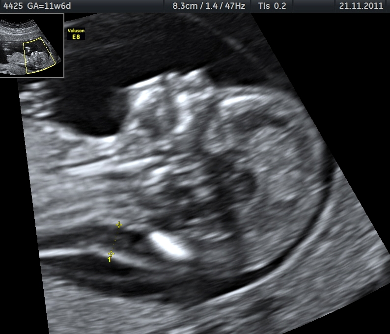

Translucência nucal e o risco que ainda não é cariótipo
TN abaixo do percentil 95 é a régua principal. Se a banca não der percentil: ≥2,5 mm acende o alerta — mas não é diagnóstico.
Parte G · GenéticaIDs 160–167E2 · Dado impactante
US de rastreio 11–14 e marcadores biofísicos
Não invasivos se dividem em teste biofísico (ultrassom) e teste bioquímico (sangue). US de rastreio clássico entre 11 e 14 semanas. Marcadores biofísicos clássicos: translucência nucal (TN), osso nasal, ducto venoso (e outros menos cobrados, ex. ângulo mandibular). Ducto venoso alterado pode sinalizar disfunção cardíaca e levantar hipótese de cromossomopatia.
Percentil 95 versus 2,5 mm
TN deve ficar abaixo do percentil 95 da curva populacional daquela semana — régua principal. Se a banca não der percentil: número mágico de alerta ≥ 2,5 mm (valor varia com IG — não é absoluto).
TN alterada = risco, não diagnóstico
TN alterada = risco de aneuploidia — não é diagnóstico. O próximo passo é combinar com sangue e, se indicado, discutir invasivo (BAQUE).
Resumo operacional: US 11–14 sem. TN < p95 (régua principal). Sem percentil: ≥2,5 mm = alerta (não absoluto). TN alterada = risco, não diagnóstico.
Translucência nucal: corte sagital esquemático com medida na nuca. p95 como régua principal.

US de TN · Moroder · Wikimedia CC BY-SA
Quiz — Página 12
Q1. Régua principal da TN:
A Sempre 3,0 mm em qualquer semana.
BAbaixo do percentil 95 da curva da semana.
C Só osso nasal.
D Qualquer valor >1 mm.
✓ Correto! A régua principal é o percentil 95 da curva para aquela semana gestacional.
✗ Incorreto. A régua principal é o percentil 95 da curva populacional daquela semana.
Q2. Banca não informa percentil. TN 2,7 mm:
A Normal absoluto.
BAlerta de risco pelo corte clássico ≥2,5 mm (não absoluto).
C Diagnóstico de T21.
D Indica cesárea.
✓ Correto! Sem percentil, ≥2,5 mm é alerta — mas não é absoluto (varia com IG).
✗ Incorreto. 2,7 mm ≥ 2,5 mm = alerta de risco, mas não é diagnóstico nem absoluto.